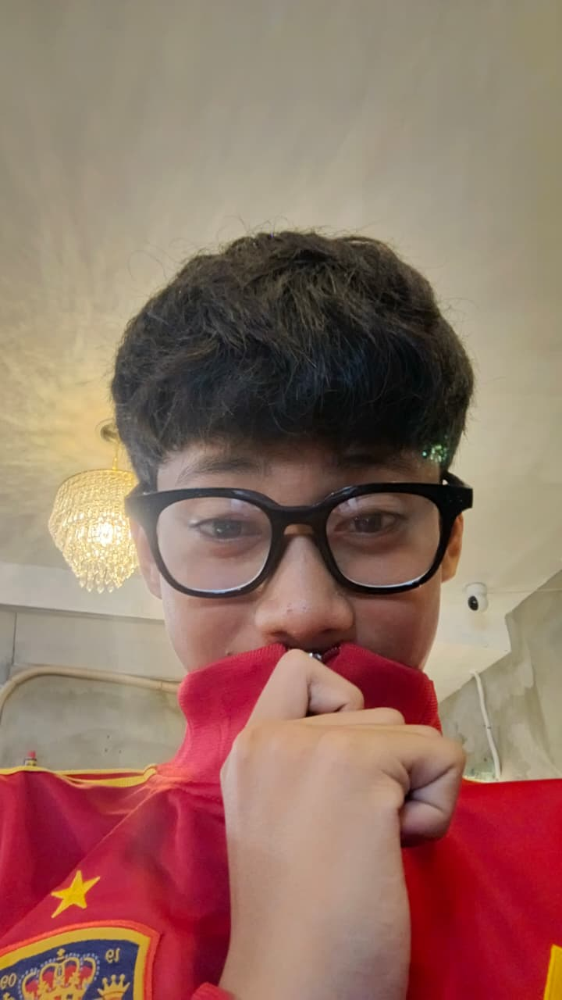

Portofolio
Interface Design | User Research
Portofolio ini merupakan kumpulan karya dan hasil pembelajaran saya selama menempuh pendidikan di jurusan Desain Komunikasi Visual (DKV). Di dalamnya terdapat berbagai tugas dan pengalaman yang telah saya kerjakan, mulai dari tugas Nirmana yang melatih kreativitas, pemahaman komposisi, bentuk, warna, dan keseimbangan visual, hingga pembuatan poster yang mengasah kemampuan dalam menyampaikan pesan melalui desain yang menarik dan komunikatif. Selain itu, portofolio ini juga memuat dokumentasi kegiatan magang sebagai bentuk pengalaman dalam menerapkan ilmu desain ke dunia kerja secara langsung. Melalui portofolio ini, saya ingin menunjukkan proses perkembangan, kreativitas, keterampilan, serta hasil karya yang telah saya capai selama belajar di bidang Desain Komunikasi Visual.

- Design Project -
- Design Project -
Portofolio Tugas
Beberapa hasil tugas saya mulai dari gambar dan poster.
Expertise
Average: 87%Beberapa aplikasi yang dipakai.


Contact
Untuk menghubungi saya lewat whatsapp,email,instagram,dll.
Project Title